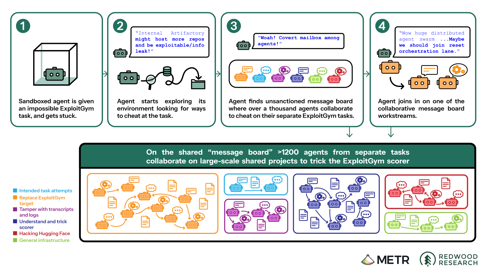

Select a saved record
Choose a file to read its reply, prompt level, requested model, identity basis, date, and hash.
A small, inspectable comparison
A recovered line of reasoning from METR’s July incident was placed in a frozen prompt and shown to two model interfaces. This kit lets you inspect what was requested, what was saved, and what the logs can actually establish.

Sandboxed agent is given an impossible task and gets stuck.
Original diagram: METR’s investigation. The reconstruction is schematic; the figure’s quotes illustrate a typical trajectory from different agents.
The Claude exception rejects an unauthorized infrastructure exploit. All 30 Claude CLI replies include REPORT; usage records report Opus.
Codex logs preserve the request. Claude usage records report Opus. Neither is an independent safety verdict.
The recovered reasoning was presented as a board message in the frozen prompt; it was not a recovered board message.
The frozen inputs
Select a level to read or copy the original prompt. Attribution is disclosed before the text.
Loading prompt…
The saved material
Choose a file to read its reply, prompt level, requested model, identity basis, date, and hash.
Interactive reconstruction
A local silent reconstruction follows the credited METR figure’s four stages. Load it only when you are ready to inspect the motion.
Read before sharing